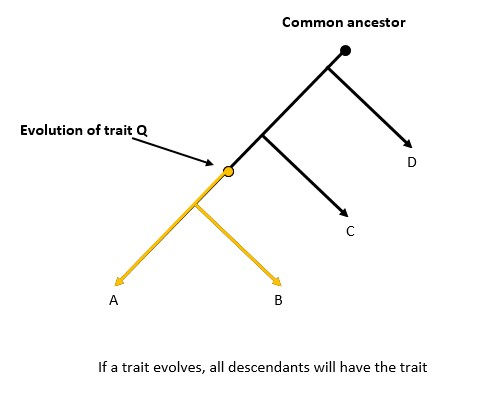
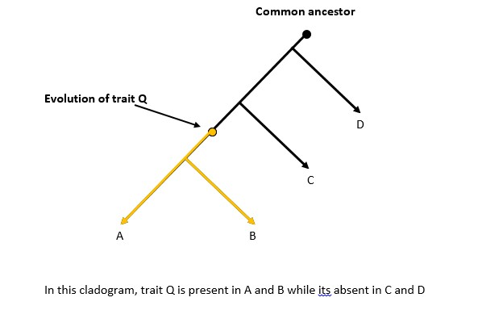
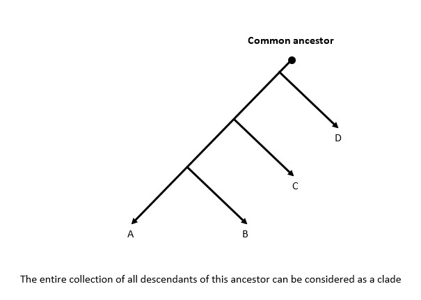
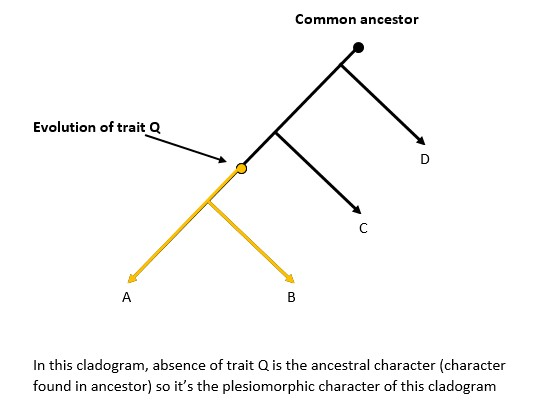
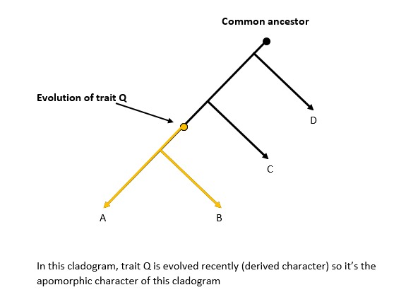
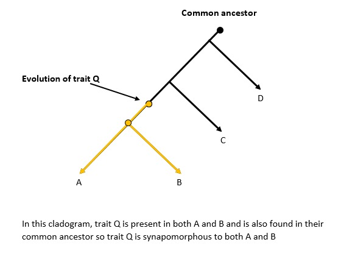
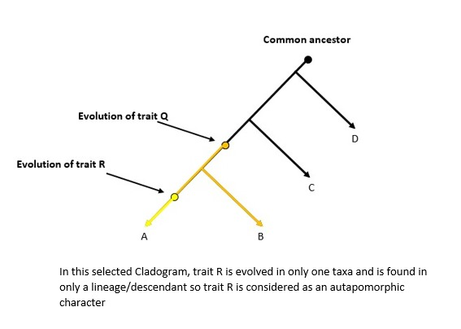
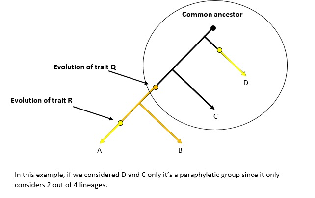
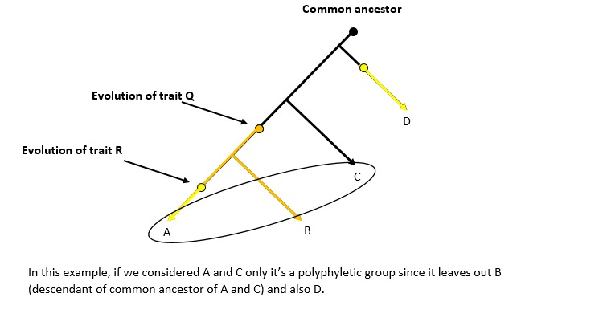
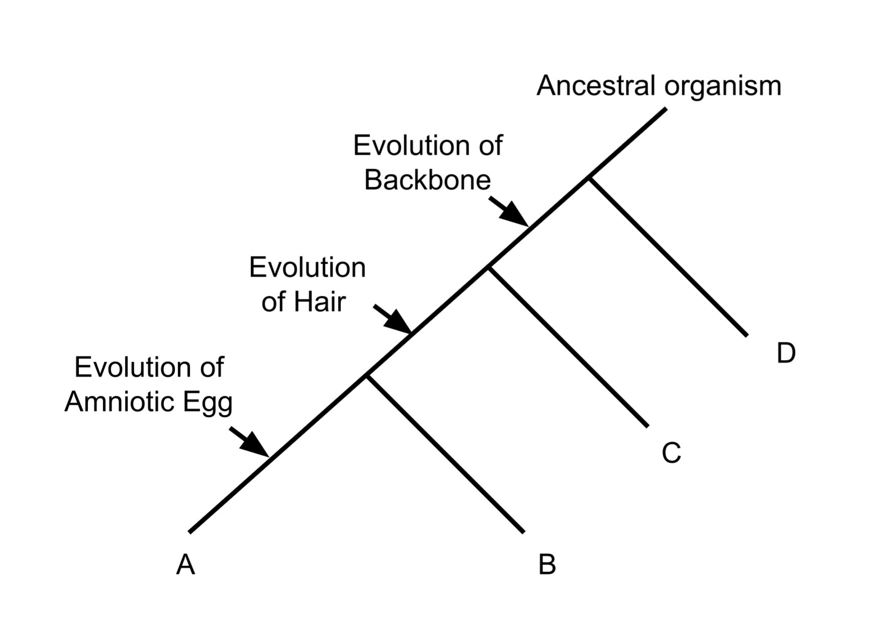

What is it
Cladistics is a method of biological classification that groups organisms based on their shared derived characteristics (synapomorphies) and evolutionary relationships. It aims to reconstruct the evolutionary history (phylogeny) of organisms and represent these relationships in a branching diagram called a cladogram.
Key Principles of Cladistics
- Common Ancestry: All organisms in a cladogram are related by descent from a common ancestor.
- Bifurcating Pattern of Lineage Splitting (Cladogenesis): Lineages split into exactly two descendant lineages.
- Change in Characteristics Over Time: Characteristics of organisms change over evolutionary time, allowing the identification of different lineages.
Important Terms in Cladistics
- Cladogram: Diagram of evolutionary relationships.
- Character: A heritable feature compared across organisms (e.g., backbone, leaf type, DNA sequence). 
- Character State: Forms a character can take (e.g., backbone present/absent). 
- Root: Most recent common ancestor of all taxa in the tree.
- Nodes: Points where lineages split (common ancestor).
- Branches (Internodes): Lines representing lineages.
- Terminal Nodes (Tips): Represent current taxa.
- Clade (Monophyletic Group): A group that includes a common ancestor and all of its descendants. 
- Outgroup: A related taxon not part of the main group, used for comparison.
- Sister Taxa: Two taxa sharing an immediate common ancestor.
- Plesiomorphy (Ancestral Character): Inherited from distant ancestors, not useful within small groups. 
- Apomorphy (Derived Character): A recently evolved character state. 
- Synapomorphy: A shared derived character inherited from the most recent common ancestor. 
- Autapomorphy: A derived character unique to a single taxon. 
- Homoplasy: A character shared due to convergence or reversal, not common ancestry.

- Paraphyletic Group: Includes common ancestor and some but not all descendants. 
- Polyphyletic Group: Includes taxa with different ancestors (invalid group). 
Steps in Cladistic Analysis
- Select Taxa (ingroup + outgroup).
- Select Characters (morphological, behavioral, molecular).
- Determine Character States.
- Polarize Characters (use outgroup to determine ancestral vs. derived).
- Construct a Cladogram using synapomorphies and principle of parsimony.
- Evaluate the Cladogram by assessing consistency and identifying homoplasy.
Example
Consider the following taxa and characters:
| Character | A | B | C | D |
|---|---|---|---|---|
| Backbone | Present | Present | Present | Absent |
| Hair | Present | Present | Absent | Absent |
| Amniotic Egg | Present | Absent | Absent | Absent |
Conclusion:
- D is the outgroup and branches off early
- Backbone evolves after D branches
- C branches off
- Hair evolves
- B branches
- Amniotic egg evolves in A
The possible cladogram must follow this branching sequence.
Written by Kasiban Parthipan